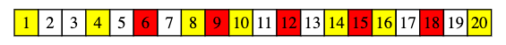
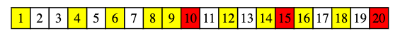
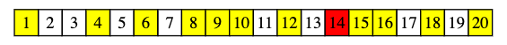
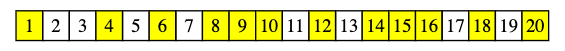

<!DOCTYPE html><html><head>
      <title>&#x8CEA;&#x6578;&#x7BE9;&#x6CD5;</title>
      <meta charset="utf-8">
      <meta name="viewport" content="width=device-width, initial-scale=1.0">
      
      <link rel="stylesheet" href="https://cdn.jsdelivr.net/npm/katex@0.12.0/dist/katex.min.css">
      
      
      
      
      
      
      
      
      
      <style>
      /**
 * prism.js Github theme based on GitHub's theme.
 * @author Sam Clarke
 */
code[class*="language-"],
pre[class*="language-"] {
  color: #333;
  background: none;
  font-family: Consolas, "Liberation Mono", Menlo, Courier, monospace;
  text-align: left;
  white-space: pre;
  word-spacing: normal;
  word-break: normal;
  word-wrap: normal;
  line-height: 1.4;

  -moz-tab-size: 8;
  -o-tab-size: 8;
  tab-size: 8;

  -webkit-hyphens: none;
  -moz-hyphens: none;
  -ms-hyphens: none;
  hyphens: none;
}

/* Code blocks */
pre[class*="language-"] {
  padding: .8em;
  overflow: auto;
  /* border: 1px solid #ddd; */
  border-radius: 3px;
  /* background: #fff; */
  background: #f5f5f5;
}

/* Inline code */
:not(pre) > code[class*="language-"] {
  padding: .1em;
  border-radius: .3em;
  white-space: normal;
  background: #f5f5f5;
}

.token.comment,
.token.blockquote {
  color: #969896;
}

.token.cdata {
  color: #183691;
}

.token.doctype,
.token.punctuation,
.token.variable,
.token.macro.property {
  color: #333;
}

.token.operator,
.token.important,
.token.keyword,
.token.rule,
.token.builtin {
  color: #a71d5d;
}

.token.string,
.token.url,
.token.regex,
.token.attr-value {
  color: #183691;
}

.token.property,
.token.number,
.token.boolean,
.token.entity,
.token.atrule,
.token.constant,
.token.symbol,
.token.command,
.token.code {
  color: #0086b3;
}

.token.tag,
.token.selector,
.token.prolog {
  color: #63a35c;
}

.token.function,
.token.namespace,
.token.pseudo-element,
.token.class,
.token.class-name,
.token.pseudo-class,
.token.id,
.token.url-reference .token.variable,
.token.attr-name {
  color: #795da3;
}

.token.entity {
  cursor: help;
}

.token.title,
.token.title .token.punctuation {
  font-weight: bold;
  color: #1d3e81;
}

.token.list {
  color: #ed6a43;
}

.token.inserted {
  background-color: #eaffea;
  color: #55a532;
}

.token.deleted {
  background-color: #ffecec;
  color: #bd2c00;
}

.token.bold {
  font-weight: bold;
}

.token.italic {
  font-style: italic;
}


/* JSON */
.language-json .token.property {
  color: #183691;
}

.language-markup .token.tag .token.punctuation {
  color: #333;
}

/* CSS */
code.language-css,
.language-css .token.function {
  color: #0086b3;
}

/* YAML */
.language-yaml .token.atrule {
  color: #63a35c;
}

code.language-yaml {
  color: #183691;
}

/* Ruby */
.language-ruby .token.function {
  color: #333;
}

/* Markdown */
.language-markdown .token.url {
  color: #795da3;
}

/* Makefile */
.language-makefile .token.symbol {
  color: #795da3;
}

.language-makefile .token.variable {
  color: #183691;
}

.language-makefile .token.builtin {
  color: #0086b3;
}

/* Bash */
.language-bash .token.keyword {
  color: #0086b3;
}

/* highlight */
pre[data-line] {
  position: relative;
  padding: 1em 0 1em 3em;
}
pre[data-line] .line-highlight-wrapper {
  position: absolute;
  top: 0;
  left: 0;
  background-color: transparent;
  display: block;
  width: 100%;
}

pre[data-line] .line-highlight {
  position: absolute;
  left: 0;
  right: 0;
  padding: inherit 0;
  margin-top: 1em;
  background: hsla(24, 20%, 50%,.08);
  background: linear-gradient(to right, hsla(24, 20%, 50%,.1) 70%, hsla(24, 20%, 50%,0));
  pointer-events: none;
  line-height: inherit;
  white-space: pre;
}

pre[data-line] .line-highlight:before, 
pre[data-line] .line-highlight[data-end]:after {
  content: attr(data-start);
  position: absolute;
  top: .4em;
  left: .6em;
  min-width: 1em;
  padding: 0 .5em;
  background-color: hsla(24, 20%, 50%,.4);
  color: hsl(24, 20%, 95%);
  font: bold 65%/1.5 sans-serif;
  text-align: center;
  vertical-align: .3em;
  border-radius: 999px;
  text-shadow: none;
  box-shadow: 0 1px white;
}

pre[data-line] .line-highlight[data-end]:after {
  content: attr(data-end);
  top: auto;
  bottom: .4em;
}html body{font-family:"Helvetica Neue",Helvetica,"Segoe UI",Arial,freesans,sans-serif;font-size:16px;line-height:1.6;color:#333;background-color:#fff;overflow:initial;box-sizing:border-box;word-wrap:break-word}html body>:first-child{margin-top:0}html body h1,html body h2,html body h3,html body h4,html body h5,html body h6{line-height:1.2;margin-top:1em;margin-bottom:16px;color:#000}html body h1{font-size:2.25em;font-weight:300;padding-bottom:.3em}html body h2{font-size:1.75em;font-weight:400;padding-bottom:.3em}html body h3{font-size:1.5em;font-weight:500}html body h4{font-size:1.25em;font-weight:600}html body h5{font-size:1.1em;font-weight:600}html body h6{font-size:1em;font-weight:600}html body h1,html body h2,html body h3,html body h4,html body h5{font-weight:600}html body h5{font-size:1em}html body h6{color:#5c5c5c}html body strong{color:#000}html body del{color:#5c5c5c}html body a:not([href]){color:inherit;text-decoration:none}html body a{color:#08c;text-decoration:none}html body a:hover{color:#00a3f5;text-decoration:none}html body img{max-width:100%}html body>p{margin-top:0;margin-bottom:16px;word-wrap:break-word}html body>ul,html body>ol{margin-bottom:16px}html body ul,html body ol{padding-left:2em}html body ul.no-list,html body ol.no-list{padding:0;list-style-type:none}html body ul ul,html body ul ol,html body ol ol,html body ol ul{margin-top:0;margin-bottom:0}html body li{margin-bottom:0}html body li.task-list-item{list-style:none}html body li>p{margin-top:0;margin-bottom:0}html body .task-list-item-checkbox{margin:0 .2em .25em -1.8em;vertical-align:middle}html body .task-list-item-checkbox:hover{cursor:pointer}html body blockquote{margin:16px 0;font-size:inherit;padding:0 15px;color:#5c5c5c;background-color:#f0f0f0;border-left:4px solid #d6d6d6}html body blockquote>:first-child{margin-top:0}html body blockquote>:last-child{margin-bottom:0}html body hr{height:4px;margin:32px 0;background-color:#d6d6d6;border:0 none}html body table{margin:10px 0 15px 0;border-collapse:collapse;border-spacing:0;display:block;width:100%;overflow:auto;word-break:normal;word-break:keep-all}html body table th{font-weight:bold;color:#000}html body table td,html body table th{border:1px solid #d6d6d6;padding:6px 13px}html body dl{padding:0}html body dl dt{padding:0;margin-top:16px;font-size:1em;font-style:italic;font-weight:bold}html body dl dd{padding:0 16px;margin-bottom:16px}html body code{font-family:Menlo,Monaco,Consolas,'Courier New',monospace;font-size:.85em !important;color:#000;background-color:#f0f0f0;border-radius:3px;padding:.2em 0}html body code::before,html body code::after{letter-spacing:-0.2em;content:"\00a0"}html body pre>code{padding:0;margin:0;font-size:.85em !important;word-break:normal;white-space:pre;background:transparent;border:0}html body .highlight{margin-bottom:16px}html body .highlight pre,html body pre{padding:1em;overflow:auto;font-size:.85em !important;line-height:1.45;border:#d6d6d6;border-radius:3px}html body .highlight pre{margin-bottom:0;word-break:normal}html body pre code,html body pre tt{display:inline;max-width:initial;padding:0;margin:0;overflow:initial;line-height:inherit;word-wrap:normal;background-color:transparent;border:0}html body pre code:before,html body pre tt:before,html body pre code:after,html body pre tt:after{content:normal}html body p,html body blockquote,html body ul,html body ol,html body dl,html body pre{margin-top:0;margin-bottom:16px}html body kbd{color:#000;border:1px solid #d6d6d6;border-bottom:2px solid #c7c7c7;padding:2px 4px;background-color:#f0f0f0;border-radius:3px}@media print{html body{background-color:#fff}html body h1,html body h2,html body h3,html body h4,html body h5,html body h6{color:#000;page-break-after:avoid}html body blockquote{color:#5c5c5c}html body pre{page-break-inside:avoid}html body table{display:table}html body img{display:block;max-width:100%;max-height:100%}html body pre,html body code{word-wrap:break-word;white-space:pre}}.markdown-preview{width:100%;height:100%;box-sizing:border-box}.markdown-preview .pagebreak,.markdown-preview .newpage{page-break-before:always}.markdown-preview pre.line-numbers{position:relative;padding-left:3.8em;counter-reset:linenumber}.markdown-preview pre.line-numbers>code{position:relative}.markdown-preview pre.line-numbers .line-numbers-rows{position:absolute;pointer-events:none;top:1em;font-size:100%;left:0;width:3em;letter-spacing:-1px;border-right:1px solid #999;-webkit-user-select:none;-moz-user-select:none;-ms-user-select:none;user-select:none}.markdown-preview pre.line-numbers .line-numbers-rows>span{pointer-events:none;display:block;counter-increment:linenumber}.markdown-preview pre.line-numbers .line-numbers-rows>span:before{content:counter(linenumber);color:#999;display:block;padding-right:.8em;text-align:right}.markdown-preview .mathjax-exps .MathJax_Display{text-align:center !important}.markdown-preview:not([for="preview"]) .code-chunk .btn-group{display:none}.markdown-preview:not([for="preview"]) .code-chunk .status{display:none}.markdown-preview:not([for="preview"]) .code-chunk .output-div{margin-bottom:16px}.scrollbar-style::-webkit-scrollbar{width:8px}.scrollbar-style::-webkit-scrollbar-track{border-radius:10px;background-color:transparent}.scrollbar-style::-webkit-scrollbar-thumb{border-radius:5px;background-color:rgba(150,150,150,0.66);border:4px solid rgba(150,150,150,0.66);background-clip:content-box}html body[for="html-export"]:not([data-presentation-mode]){position:relative;width:100%;height:100%;top:0;left:0;margin:0;padding:0;overflow:auto}html body[for="html-export"]:not([data-presentation-mode]) .markdown-preview{position:relative;top:0}@media screen and (min-width:914px){html body[for="html-export"]:not([data-presentation-mode]) .markdown-preview{padding:2em calc(50% - 457px + 2em)}}@media screen and (max-width:914px){html body[for="html-export"]:not([data-presentation-mode]) .markdown-preview{padding:2em}}@media screen and (max-width:450px){html body[for="html-export"]:not([data-presentation-mode]) .markdown-preview{font-size:14px !important;padding:1em}}@media print{html body[for="html-export"]:not([data-presentation-mode]) #sidebar-toc-btn{display:none}}html body[for="html-export"]:not([data-presentation-mode]) #sidebar-toc-btn{position:fixed;bottom:8px;left:8px;font-size:28px;cursor:pointer;color:inherit;z-index:99;width:32px;text-align:center;opacity:.4}html body[for="html-export"]:not([data-presentation-mode])[html-show-sidebar-toc] #sidebar-toc-btn{opacity:1}html body[for="html-export"]:not([data-presentation-mode])[html-show-sidebar-toc] .md-sidebar-toc{position:fixed;top:0;left:0;width:300px;height:100%;padding:32px 0 48px 0;font-size:14px;box-shadow:0 0 4px rgba(150,150,150,0.33);box-sizing:border-box;overflow:auto;background-color:inherit}html body[for="html-export"]:not([data-presentation-mode])[html-show-sidebar-toc] .md-sidebar-toc::-webkit-scrollbar{width:8px}html body[for="html-export"]:not([data-presentation-mode])[html-show-sidebar-toc] .md-sidebar-toc::-webkit-scrollbar-track{border-radius:10px;background-color:transparent}html body[for="html-export"]:not([data-presentation-mode])[html-show-sidebar-toc] .md-sidebar-toc::-webkit-scrollbar-thumb{border-radius:5px;background-color:rgba(150,150,150,0.66);border:4px solid rgba(150,150,150,0.66);background-clip:content-box}html body[for="html-export"]:not([data-presentation-mode])[html-show-sidebar-toc] .md-sidebar-toc a{text-decoration:none}html body[for="html-export"]:not([data-presentation-mode])[html-show-sidebar-toc] .md-sidebar-toc ul{padding:0 1.6em;margin-top:.8em}html body[for="html-export"]:not([data-presentation-mode])[html-show-sidebar-toc] .md-sidebar-toc li{margin-bottom:.8em}html body[for="html-export"]:not([data-presentation-mode])[html-show-sidebar-toc] .md-sidebar-toc ul{list-style-type:none}html body[for="html-export"]:not([data-presentation-mode])[html-show-sidebar-toc] .markdown-preview{left:300px;width:calc(100% -  300px);padding:2em calc(50% - 457px -  150px);margin:0;box-sizing:border-box}@media screen and (max-width:1274px){html body[for="html-export"]:not([data-presentation-mode])[html-show-sidebar-toc] .markdown-preview{padding:2em}}@media screen and (max-width:450px){html body[for="html-export"]:not([data-presentation-mode])[html-show-sidebar-toc] .markdown-preview{width:100%}}html body[for="html-export"]:not([data-presentation-mode]):not([html-show-sidebar-toc]) .markdown-preview{left:50%;transform:translateX(-50%)}html body[for="html-export"]:not([data-presentation-mode]):not([html-show-sidebar-toc]) .md-sidebar-toc{display:none}
/* Please visit the URL below for more information: */
/*   https://shd101wyy.github.io/markdown-preview-enhanced/#/customize-css */

      </style>
    </head>
    <body for="html-export">
      <div class="mume markdown-preview  ">
      <h2>&#x8CEA;&#x6578;&#x7BE9;&#x6CD5;</h2>
<p>&#x8CEA;&#x6578;&#x7BE9;&#x6CD5;&#xFF0C;&#x9867;&#x540D;&#x601D;&#x7FA9;&#x662F;&#x4E00;&#x7A2E;&#x7BE9;&#x9078;&#x51FA;&#x8CEA;&#x6578;&#x7684;&#x6F14;&#x7B97;&#x6CD5;&#xFF0C;&#x7528;&#x9014;&#x5728;&#x65BC;&#x5FEB;&#x901F;&#x6709;&#x6548;&#x7684;&#x627E;&#x51FA;<span class="katex"><span class="katex-mathml"><math xmlns="http://www.w3.org/1998/Math/MathML"><semantics><mrow><mo stretchy="false">[</mo><mn>1</mn><mo separator="true">,</mo><mi>n</mi><mo stretchy="false">]</mo></mrow><annotation encoding="application/x-tex">[1, n]</annotation></semantics></math></span><span class="katex-html" aria-hidden="true"><span class="base"><span class="strut" style="height:1em;vertical-align:-0.25em;"></span><span class="mopen">[</span><span class="mord">1</span><span class="mpunct">,</span><span class="mspace" style="margin-right:0.16666666666666666em;"></span><span class="mord mathnormal">n</span><span class="mclose">]</span></span></span></span>&#x4E2D;&#x7684;&#x8CEA;&#x6578;&#x3002;</p>
<hr>
<p><strong>&#x57C3;&#x5F0F;&#x7BE9;&#x6CD5;</strong></p>
<p>&#x8907;&#x96DC;&#x5EA6;&#xFF1A;<span class="katex"><span class="katex-mathml"><math xmlns="http://www.w3.org/1998/Math/MathML"><semantics><mrow><mi>O</mi><mo stretchy="false">(</mo><mi>n</mi><mi>l</mi><mi>o</mi><mi>g</mi><mi>l</mi><mi>o</mi><mi>g</mi><mi>n</mi><mo stretchy="false">)</mo></mrow><annotation encoding="application/x-tex">O(nloglogn)</annotation></semantics></math></span><span class="katex-html" aria-hidden="true"><span class="base"><span class="strut" style="height:1em;vertical-align:-0.25em;"></span><span class="mord mathnormal" style="margin-right:0.02778em;">O</span><span class="mopen">(</span><span class="mord mathnormal">n</span><span class="mord mathnormal" style="margin-right:0.01968em;">l</span><span class="mord mathnormal">o</span><span class="mord mathnormal" style="margin-right:0.03588em;">g</span><span class="mord mathnormal" style="margin-right:0.01968em;">l</span><span class="mord mathnormal">o</span><span class="mord mathnormal" style="margin-right:0.03588em;">g</span><span class="mord mathnormal">n</span><span class="mclose">)</span></span></span></span></p>
<p>&#x7BE9;&#x6CD5;&#x539F;&#x7406;&#xFF1A;</p>
<ul>
<li>&#x627E;&#x5230;&#x7684;<span class="katex"><span class="katex-mathml"><math xmlns="http://www.w3.org/1998/Math/MathML"><semantics><mrow><mo stretchy="false">[</mo><mn>1</mn><mo separator="true">,</mo><mi>n</mi><mo stretchy="false">]</mo></mrow><annotation encoding="application/x-tex">[1, n]</annotation></semantics></math></span><span class="katex-html" aria-hidden="true"><span class="base"><span class="strut" style="height:1em;vertical-align:-0.25em;"></span><span class="mopen">[</span><span class="mord">1</span><span class="mpunct">,</span><span class="mspace" style="margin-right:0.16666666666666666em;"></span><span class="mord mathnormal">n</span><span class="mclose">]</span></span></span></span>&#x7684;&#x8CEA;&#x6578;&#xFF0C;&#x5176;&#x5BE6;&#x5C31;&#x662F;&#x522A;&#x6389;<span class="katex"><span class="katex-mathml"><math xmlns="http://www.w3.org/1998/Math/MathML"><semantics><mrow><mo stretchy="false">[</mo><mn>1</mn><mo separator="true">,</mo><mi>n</mi><mo stretchy="false">]</mo></mrow><annotation encoding="application/x-tex">[1, n]</annotation></semantics></math></span><span class="katex-html" aria-hidden="true"><span class="base"><span class="strut" style="height:1em;vertical-align:-0.25em;"></span><span class="mopen">[</span><span class="mord">1</span><span class="mpunct">,</span><span class="mspace" style="margin-right:0.16666666666666666em;"></span><span class="mord mathnormal">n</span><span class="mclose">]</span></span></span></span>&#x5167;&#x6240;&#x6709;&#x7684;&#x5408;&#x6578;&#xFF08;&#x975E;&#x8CEA;&#x6578;&#xFF09;</li>
<li>&#x6240;&#x6709;&#x5408;&#x6578;&#x90FD;&#x5B58;&#x5728;&#x81F3;&#x5C11;&#x4E00;&#x500B;&#x5C0F;&#x65BC;&#x8A72;&#x5408;&#x6578;&#x7684;&#x8CEA;&#x6578;</li>
<li>&#x82E5;&#x5C0D;&#x6BCF;&#x500B;&#x8CEA;&#x6578;&#xFF0C;&#x5C07;&#x5176;&#x500D;&#x6578;&#x522A;&#x9664;&#xFF0C;&#x53EF;&#x522A;&#x9664;&#x6240;&#x6709;&#x5408;&#x6578;&#xFF0C;&#x7559;&#x4E0B;&#x8CEA;&#x6578;</li>
</ul>
<p>&#x56E0;&#x6B64;&#xFF0C;&#x53EA;&#x8981;&#x6211;&#x5011;&#x5F9E;&#x5C0F;&#x5230;&#x5927;&#x904D;&#x6B77;&#x6BCF;&#x500B;&#x6578;&#xFF0C;&#x82E5;&#x904D;&#x6B77;&#x5230;&#x67D0;&#x6578;&#x6642;&#x8A72;&#x6578;&#x4ECD;&#x672A;&#x88AB;&#x6A19;&#x8A18;&#x7684;&#x8A71;&#xFF0C;&#x5247;&#x8A72;&#x6578;&#x70BA;&#x8CEA;&#x6578;&#xFF0C;&#x5C07;&#x8A72;&#x6578;&#x6240;&#x6709;&#x500D;&#x6578;&#x6A19;&#x8A18;&#x70BA;&#x5408;&#x6578;&#xFF0C;&#x90A3;&#x9EBC;&#x7A0B;&#x5F0F;&#x7D50;&#x675F;&#x672A;&#x88AB;&#x6A19;&#x793A;&#x7684;&#x6578;&#x5373;&#x70BA;&#x8CEA;&#x6578;&#x3002;</p>
<hr>
<p>&#x4EE5;<span class="katex"><span class="katex-mathml"><math xmlns="http://www.w3.org/1998/Math/MathML"><semantics><mrow><mo stretchy="false">[</mo><mn>1</mn><mo separator="true">,</mo><mn>20</mn><mo stretchy="false">]</mo></mrow><annotation encoding="application/x-tex">[1, 20]</annotation></semantics></math></span><span class="katex-html" aria-hidden="true"><span class="base"><span class="strut" style="height:1em;vertical-align:-0.25em;"></span><span class="mopen">[</span><span class="mord">1</span><span class="mpunct">,</span><span class="mspace" style="margin-right:0.16666666666666666em;"></span><span class="mord">2</span><span class="mord">0</span><span class="mclose">]</span></span></span></span>&#x70BA;&#x4F8B;&#xFF1A;</p>
<ul>
<li>&#x7531;&#x65BC;<span class="katex"><span class="katex-mathml"><math xmlns="http://www.w3.org/1998/Math/MathML"><semantics><mrow><mn>1</mn></mrow><annotation encoding="application/x-tex">1</annotation></semantics></math></span><span class="katex-html" aria-hidden="true"><span class="base"><span class="strut" style="height:0.64444em;vertical-align:0em;"></span><span class="mord">1</span></span></span></span>&#x4E0D;&#x662F;&#x8CEA;&#x6578;&#xFF0C;&#x6240;&#x4EE5;&#x5148;&#x6A19;&#x793A;&#x8D77;&#x4F86;<br>
</li>
<li>&#x627E;&#x5230;&#x4E0B;&#x4E00;&#x500B;&#x672A;&#x88AB;&#x6A19;&#x793A;&#x7684;&#x6578;<span class="katex"><span class="katex-mathml"><math xmlns="http://www.w3.org/1998/Math/MathML"><semantics><mrow><mn>2</mn></mrow><annotation encoding="application/x-tex">2</annotation></semantics></math></span><span class="katex-html" aria-hidden="true"><span class="base"><span class="strut" style="height:0.64444em;vertical-align:0em;"></span><span class="mord">2</span></span></span></span>&#xFF0C;&#x6A19;&#x793A;&#x5176;&#x500D;&#x6578;<br>
</li>
<li>&#x627E;&#x5230;&#x4E0B;&#x4E00;&#x500B;&#x672A;&#x88AB;&#x6A19;&#x793A;&#x7684;&#x6578;<span class="katex"><span class="katex-mathml"><math xmlns="http://www.w3.org/1998/Math/MathML"><semantics><mrow><mn>3</mn></mrow><annotation encoding="application/x-tex">3</annotation></semantics></math></span><span class="katex-html" aria-hidden="true"><span class="base"><span class="strut" style="height:0.64444em;vertical-align:0em;"></span><span class="mord">3</span></span></span></span>&#xFF0C;&#x6A19;&#x793A;&#x5176;&#x500D;&#x6578;<br>
</li>
<li>&#x627E;&#x5230;&#x4E0B;&#x4E00;&#x500B;&#x672A;&#x88AB;&#x6A19;&#x793A;&#x7684;&#x6578;<span class="katex"><span class="katex-mathml"><math xmlns="http://www.w3.org/1998/Math/MathML"><semantics><mrow><mn>5</mn></mrow><annotation encoding="application/x-tex">5</annotation></semantics></math></span><span class="katex-html" aria-hidden="true"><span class="base"><span class="strut" style="height:0.64444em;vertical-align:0em;"></span><span class="mord">5</span></span></span></span>&#xFF0C;&#x6A19;&#x793A;&#x5176;&#x500D;&#x6578;<br>
</li>
<li>&#x627E;&#x5230;&#x4E0B;&#x4E00;&#x500B;&#x672A;&#x88AB;&#x6A19;&#x793A;&#x7684;&#x6578;<span class="katex"><span class="katex-mathml"><math xmlns="http://www.w3.org/1998/Math/MathML"><semantics><mrow><mn>7</mn></mrow><annotation encoding="application/x-tex">7</annotation></semantics></math></span><span class="katex-html" aria-hidden="true"><span class="base"><span class="strut" style="height:0.64444em;vertical-align:0em;"></span><span class="mord">7</span></span></span></span>&#xFF0C;&#x6A19;&#x793A;&#x5176;&#x500D;&#x6578;<br>
</li>
<li>&#x4F9D;&#x5E8F;&#x8655;&#x7406;<span class="katex"><span class="katex-mathml"><math xmlns="http://www.w3.org/1998/Math/MathML"><semantics><mrow><mn>11</mn></mrow><annotation encoding="application/x-tex">11</annotation></semantics></math></span><span class="katex-html" aria-hidden="true"><span class="base"><span class="strut" style="height:0.64444em;vertical-align:0em;"></span><span class="mord">1</span><span class="mord">1</span></span></span></span>&#x3001;<span class="katex"><span class="katex-mathml"><math xmlns="http://www.w3.org/1998/Math/MathML"><semantics><mrow><mn>13</mn></mrow><annotation encoding="application/x-tex">13</annotation></semantics></math></span><span class="katex-html" aria-hidden="true"><span class="base"><span class="strut" style="height:0.64444em;vertical-align:0em;"></span><span class="mord">1</span><span class="mord">3</span></span></span></span>&#x3001;<span class="katex"><span class="katex-mathml"><math xmlns="http://www.w3.org/1998/Math/MathML"><semantics><mrow><mn>17</mn></mrow><annotation encoding="application/x-tex">17</annotation></semantics></math></span><span class="katex-html" aria-hidden="true"><span class="base"><span class="strut" style="height:0.64444em;vertical-align:0em;"></span><span class="mord">1</span><span class="mord">7</span></span></span></span>&#x3001;<span class="katex"><span class="katex-mathml"><math xmlns="http://www.w3.org/1998/Math/MathML"><semantics><mrow><mn>19</mn></mrow><annotation encoding="application/x-tex">19</annotation></semantics></math></span><span class="katex-html" aria-hidden="true"><span class="base"><span class="strut" style="height:0.64444em;vertical-align:0em;"></span><span class="mord">1</span><span class="mord">9</span></span></span></span>&#xFF0C;&#x6700;&#x5F8C;&#x53EF;&#x5F97;<br>
</li>
<li>&#x672A;&#x88AB;&#x6A19;&#x793A;&#xFF08;&#x522A;&#x6389;&#xFF09;&#x7684;&#x6578;&#x5373;&#x70BA;&#x8CEA;&#x6578;</li>
</ul>
<hr>
<p><strong>&#x4E00;&#x4E9B;&#x7C21;&#x55AE;&#x7684;&#x512A;&#x5316;</strong></p>
<ul>
<li>&#x6A19;&#x793A;&#x8CEA;&#x6578;&#x7684;&#x500D;&#x6578;&#x6642;&#xFF0C;&#x53EF;&#x5F9E;&#x8CEA;&#x6578;&#x7684;&#x5E73;&#x65B9;&#x958B;&#x59CB;
<ul>
<li>&#x66F4;&#x5C0F;&#x7684;&#x6578;&#x5DF2;&#x88AB;&#x524D;&#x9762;&#x7684;&#x8CEA;&#x6578;&#x6A19;&#x793A;&#x904E;</li>
<li>&#x8209;&#x4F8B;&#xFF1A;&#x6A19;&#x793A;<span class="katex"><span class="katex-mathml"><math xmlns="http://www.w3.org/1998/Math/MathML"><semantics><mrow><mn>5</mn></mrow><annotation encoding="application/x-tex">5</annotation></semantics></math></span><span class="katex-html" aria-hidden="true"><span class="base"><span class="strut" style="height:0.64444em;vertical-align:0em;"></span><span class="mord">5</span></span></span></span>&#x6642;&#xFF0C;&#x53EF;&#x5F9E;<span class="katex"><span class="katex-mathml"><math xmlns="http://www.w3.org/1998/Math/MathML"><semantics><mrow><mn>25</mn></mrow><annotation encoding="application/x-tex">25</annotation></semantics></math></span><span class="katex-html" aria-hidden="true"><span class="base"><span class="strut" style="height:0.64444em;vertical-align:0em;"></span><span class="mord">2</span><span class="mord">5</span></span></span></span>&#x5411;&#x5F8C;&#x6A19;&#x793A;&#xFF0C;&#x56E0;&#x70BA;<span class="katex"><span class="katex-mathml"><math xmlns="http://www.w3.org/1998/Math/MathML"><semantics><mrow><mn>10</mn></mrow><annotation encoding="application/x-tex">10</annotation></semantics></math></span><span class="katex-html" aria-hidden="true"><span class="base"><span class="strut" style="height:0.64444em;vertical-align:0em;"></span><span class="mord">1</span><span class="mord">0</span></span></span></span>&#x5DF2;&#x88AB;<span class="katex"><span class="katex-mathml"><math xmlns="http://www.w3.org/1998/Math/MathML"><semantics><mrow><mn>2</mn></mrow><annotation encoding="application/x-tex">2</annotation></semantics></math></span><span class="katex-html" aria-hidden="true"><span class="base"><span class="strut" style="height:0.64444em;vertical-align:0em;"></span><span class="mord">2</span></span></span></span>&#x6A19;&#x793A;&#x904E;&#xFF0C;<span class="katex"><span class="katex-mathml"><math xmlns="http://www.w3.org/1998/Math/MathML"><semantics><mrow><mn>15</mn></mrow><annotation encoding="application/x-tex">15</annotation></semantics></math></span><span class="katex-html" aria-hidden="true"><span class="base"><span class="strut" style="height:0.64444em;vertical-align:0em;"></span><span class="mord">1</span><span class="mord">5</span></span></span></span>&#x5DF2;&#x88AB;<span class="katex"><span class="katex-mathml"><math xmlns="http://www.w3.org/1998/Math/MathML"><semantics><mrow><mn>3</mn></mrow><annotation encoding="application/x-tex">3</annotation></semantics></math></span><span class="katex-html" aria-hidden="true"><span class="base"><span class="strut" style="height:0.64444em;vertical-align:0em;"></span><span class="mord">3</span></span></span></span>&#x6A19;&#x793A;&#x904E;</li>
</ul>
</li>
<li>&#x50C5;&#x9700;&#x8981;&#x8655;&#x7406;&#x5230;<span class="katex"><span class="katex-mathml"><math xmlns="http://www.w3.org/1998/Math/MathML"><semantics><mrow><msqrt><mi>n</mi></msqrt></mrow><annotation encoding="application/x-tex">\sqrt{n}</annotation></semantics></math></span><span class="katex-html" aria-hidden="true"><span class="base"><span class="strut" style="height:1.04em;vertical-align:-0.23972em;"></span><span class="mord sqrt"><span class="vlist-t vlist-t2"><span class="vlist-r"><span class="vlist" style="height:0.8002800000000001em;"><span class="svg-align" style="top:-3em;"><span class="pstrut" style="height:3em;"></span><span class="mord" style="padding-left:0.833em;"><span class="mord mathnormal">n</span></span></span><span style="top:-2.76028em;"><span class="pstrut" style="height:3em;"></span><span class="hide-tail" style="min-width:0.853em;height:1.08em;"><svg width="400em" height="1.08em" viewBox="0 0 400000 1080" preserveAspectRatio="xMinYMin slice"><path d="M95,702
c-2.7,0,-7.17,-2.7,-13.5,-8c-5.8,-5.3,-9.5,-10,-9.5,-14
c0,-2,0.3,-3.3,1,-4c1.3,-2.7,23.83,-20.7,67.5,-54
c44.2,-33.3,65.8,-50.3,66.5,-51c1.3,-1.3,3,-2,5,-2c4.7,0,8.7,3.3,12,10
s173,378,173,378c0.7,0,35.3,-71,104,-213c68.7,-142,137.5,-285,206.5,-429
c69,-144,104.5,-217.7,106.5,-221
l0 -0
c5.3,-9.3,12,-14,20,-14
H400000v40H845.2724
s-225.272,467,-225.272,467s-235,486,-235,486c-2.7,4.7,-9,7,-19,7
c-6,0,-10,-1,-12,-3s-194,-422,-194,-422s-65,47,-65,47z
M834 80h400000v40h-400000z"/></svg></span></span></span><span class="vlist-s">&#x200B;</span></span><span class="vlist-r"><span class="vlist" style="height:0.23972em;"><span></span></span></span></span></span></span></span></span>
<ul>
<li>&#x56E0;&#x70BA;<span class="katex"><span class="katex-mathml"><math xmlns="http://www.w3.org/1998/Math/MathML"><semantics><mrow><mi>n</mi></mrow><annotation encoding="application/x-tex">n</annotation></semantics></math></span><span class="katex-html" aria-hidden="true"><span class="base"><span class="strut" style="height:0.43056em;vertical-align:0em;"></span><span class="mord mathnormal">n</span></span></span></span>&#x7684;&#x6700;&#x5C0F;&#x8CEA;&#x56E0;&#x6578;&#xFF08;&#x5047;&#x8A2D;<span class="katex"><span class="katex-mathml"><math xmlns="http://www.w3.org/1998/Math/MathML"><semantics><mrow><mi>n</mi></mrow><annotation encoding="application/x-tex">n</annotation></semantics></math></span><span class="katex-html" aria-hidden="true"><span class="base"><span class="strut" style="height:0.43056em;vertical-align:0em;"></span><span class="mord mathnormal">n</span></span></span></span>&#x4E0D;&#x70BA;&#x8CEA;&#x6578;&#xFF09;&#xFF0C;&#x5FC5;&#x5B9A;&#x5C0F;&#x65BC;<span class="katex"><span class="katex-mathml"><math xmlns="http://www.w3.org/1998/Math/MathML"><semantics><mrow><msqrt><mi>n</mi></msqrt></mrow><annotation encoding="application/x-tex">\sqrt{n}</annotation></semantics></math></span><span class="katex-html" aria-hidden="true"><span class="base"><span class="strut" style="height:1.04em;vertical-align:-0.23972em;"></span><span class="mord sqrt"><span class="vlist-t vlist-t2"><span class="vlist-r"><span class="vlist" style="height:0.8002800000000001em;"><span class="svg-align" style="top:-3em;"><span class="pstrut" style="height:3em;"></span><span class="mord" style="padding-left:0.833em;"><span class="mord mathnormal">n</span></span></span><span style="top:-2.76028em;"><span class="pstrut" style="height:3em;"></span><span class="hide-tail" style="min-width:0.853em;height:1.08em;"><svg width="400em" height="1.08em" viewBox="0 0 400000 1080" preserveAspectRatio="xMinYMin slice"><path d="M95,702
c-2.7,0,-7.17,-2.7,-13.5,-8c-5.8,-5.3,-9.5,-10,-9.5,-14
c0,-2,0.3,-3.3,1,-4c1.3,-2.7,23.83,-20.7,67.5,-54
c44.2,-33.3,65.8,-50.3,66.5,-51c1.3,-1.3,3,-2,5,-2c4.7,0,8.7,3.3,12,10
s173,378,173,378c0.7,0,35.3,-71,104,-213c68.7,-142,137.5,-285,206.5,-429
c69,-144,104.5,-217.7,106.5,-221
l0 -0
c5.3,-9.3,12,-14,20,-14
H400000v40H845.2724
s-225.272,467,-225.272,467s-235,486,-235,486c-2.7,4.7,-9,7,-19,7
c-6,0,-10,-1,-12,-3s-194,-422,-194,-422s-65,47,-65,47z
M834 80h400000v40h-400000z"/></svg></span></span></span><span class="vlist-s">&#x200B;</span></span><span class="vlist-r"><span class="vlist" style="height:0.23972em;"><span></span></span></span></span></span></span></span></span></li>
</ul>
</li>
</ul>
<hr>
<p>&#x57C3;&#x5F0F;&#x7BE9;&#x7A0B;&#x5F0F;&#x78BC;&#xFF1A;</p>
<pre data-role="codeBlock" data-info="cpp" class="language-cpp"><span class="token macro property"><span class="token directive-hash">#</span><span class="token directive keyword">define</span> <span class="token macro-name">MAXN</span> <span class="token expression"><span class="token number">100000001</span></span></span>

<span class="token comment">// &#x5132;&#x5B58;&#x8CEA;&#x6578;</span>
vector<span class="token operator">&lt;</span><span class="token keyword">int</span><span class="token operator">&gt;</span> p<span class="token punctuation">;</span>
<span class="token comment">// &#x6A19;&#x8A18;&#x5408;&#x6578;</span>
vector<span class="token operator">&lt;</span><span class="token keyword">bool</span><span class="token operator">&gt;</span> <span class="token function">mark</span><span class="token punctuation">(</span>MAXN<span class="token punctuation">,</span> <span class="token number">0</span><span class="token punctuation">)</span><span class="token punctuation">;</span>

<span class="token comment">// &#x627E;&#x51FA;[1, n]&#x7684;&#x8CEA;&#x6578;</span>
<span class="token keyword">void</span> <span class="token function">isPrime</span><span class="token punctuation">(</span><span class="token keyword">int</span> n<span class="token punctuation">)</span> <span class="token punctuation">{</span>
    <span class="token comment">// &#x5148;&#x628A;1&#x7279;&#x5224;&#x6389;</span>
    mark<span class="token punctuation">[</span><span class="token number">1</span><span class="token punctuation">]</span> <span class="token operator">=</span> <span class="token number">1</span><span class="token punctuation">;</span>
    <span class="token comment">// &#x522A;&#x9664;&#x8CEA;&#x6578;&#x7684;&#x500D;&#x6578;</span>
    <span class="token keyword">for</span> <span class="token punctuation">(</span><span class="token keyword">int</span> i <span class="token operator">=</span> <span class="token number">2</span><span class="token punctuation">;</span> i <span class="token operator">&lt;=</span> <span class="token function">sqrt</span><span class="token punctuation">(</span>n<span class="token punctuation">)</span><span class="token punctuation">;</span> i<span class="token operator">++</span><span class="token punctuation">)</span>
        <span class="token keyword">if</span> <span class="token punctuation">(</span><span class="token operator">!</span>mark<span class="token punctuation">[</span>i<span class="token punctuation">]</span><span class="token punctuation">)</span> <span class="token punctuation">{</span>
            p<span class="token punctuation">.</span><span class="token function">pb</span><span class="token punctuation">(</span>i<span class="token punctuation">)</span><span class="token punctuation">;</span>
            <span class="token comment">// &#x7531;i * i&#x958B;&#x59CB;&#x522A;&#xFF0C;&#x6E1B;&#x5C11;&#x91CD;&#x8907;&#x6A19;&#x793A;</span>
            <span class="token keyword">for</span> <span class="token punctuation">(</span>ll j <span class="token operator">=</span> <span class="token number">1LL</span> <span class="token operator">*</span> i <span class="token operator">*</span> i<span class="token punctuation">;</span> j <span class="token operator">&lt;=</span> <span class="token number">1LL</span> <span class="token operator">*</span> n<span class="token punctuation">;</span> j <span class="token operator">+=</span> i<span class="token punctuation">)</span>
                mark<span class="token punctuation">[</span>j<span class="token punctuation">]</span> <span class="token operator">=</span> <span class="token number">1</span><span class="token punctuation">;</span>
        <span class="token punctuation">}</span>
    <span class="token comment">// &#x5C07;&#x5927;&#x65BC;sqrt(n)&#x7684;&#x8CEA;&#x6578;&#x5B58;&#x5165;p</span>
    <span class="token keyword">for</span> <span class="token punctuation">(</span><span class="token keyword">int</span> i <span class="token operator">=</span> <span class="token function">sqrt</span><span class="token punctuation">(</span>n<span class="token punctuation">)</span> <span class="token operator">+</span> <span class="token number">1</span><span class="token punctuation">;</span> i <span class="token operator">&lt;=</span> n<span class="token punctuation">;</span> i<span class="token operator">++</span><span class="token punctuation">)</span>
        <span class="token keyword">if</span> <span class="token punctuation">(</span><span class="token operator">!</span>mark<span class="token punctuation">[</span>i<span class="token punctuation">]</span><span class="token punctuation">)</span>
            p<span class="token punctuation">.</span><span class="token function">pb</span><span class="token punctuation">(</span>i<span class="token punctuation">)</span><span class="token punctuation">;</span>
<span class="token punctuation">}</span>
</pre><hr>
<p><strong>&#x7DDA;&#x6027;&#x7BE9;&#x6CD5;</strong></p>
<p>&#x8907;&#x96DC;&#x5EA6;&#xFF1A;<span class="katex"><span class="katex-mathml"><math xmlns="http://www.w3.org/1998/Math/MathML"><semantics><mrow><mi>O</mi><mo stretchy="false">(</mo><mi>n</mi><mo stretchy="false">)</mo></mrow><annotation encoding="application/x-tex">O(n)</annotation></semantics></math></span><span class="katex-html" aria-hidden="true"><span class="base"><span class="strut" style="height:1em;vertical-align:-0.25em;"></span><span class="mord mathnormal" style="margin-right:0.02778em;">O</span><span class="mopen">(</span><span class="mord mathnormal">n</span><span class="mclose">)</span></span></span></span></p>
<p>&#x7BE9;&#x6CD5;&#x539F;&#x7406;&#xFF1A;</p>
<ul>
<li>&#x57C3;&#x5F0F;&#x7BE9;&#x505A;&#x4E86;&#x5927;&#x91CF;&#x91CD;&#x8907;&#x6A19;&#x8A18;&#x7684;&#x52D5;&#x4F5C;&#xFF0C;&#x82E5;&#x8981;&#x52A0;&#x5FEB;&#xFF0C;&#x53EF;&#x4EE5;&#x8003;&#x616E;&#x5C0D;&#x6BCF;&#x500B;&#x5408;&#x6578;&#x53EA;&#x6A19;&#x8A18;&#x4E00;&#x6B21;</li>
<li>&#x4EFB;&#x4E00;&#x5408;&#x6578;&#x53EF;&#x8868;&#x793A;&#x6210;&#x552F;&#x4E00;&#x7684;&#x7B49;&#x5F0F;&#xFF1A;&#x5408;&#x6578; <span class="katex"><span class="katex-mathml"><math xmlns="http://www.w3.org/1998/Math/MathML"><semantics><mrow><mo>=</mo></mrow><annotation encoding="application/x-tex">=</annotation></semantics></math></span><span class="katex-html" aria-hidden="true"><span class="base"><span class="strut" style="height:0.36687em;vertical-align:0em;"></span><span class="mrel">=</span></span></span></span> &#x6700;&#x5C0F;&#x8CEA;&#x56E0;&#x6578; <span class="katex"><span class="katex-mathml"><math xmlns="http://www.w3.org/1998/Math/MathML"><semantics><mrow><mo>&#xD7;</mo><mi>x</mi></mrow><annotation encoding="application/x-tex">\times x</annotation></semantics></math></span><span class="katex-html" aria-hidden="true"><span class="base"><span class="strut" style="height:0.66666em;vertical-align:-0.08333em;"></span><span class="mord">&#xD7;</span><span class="mord mathnormal">x</span></span></span></span></li>
<li>&#x5617;&#x8A66;&#x900F;&#x904E;<span class="katex"><span class="katex-mathml"><math xmlns="http://www.w3.org/1998/Math/MathML"><semantics><mrow><mi>x</mi></mrow><annotation encoding="application/x-tex">x</annotation></semantics></math></span><span class="katex-html" aria-hidden="true"><span class="base"><span class="strut" style="height:0.43056em;vertical-align:0em;"></span><span class="mord mathnormal">x</span></span></span></span>&#x4F86;&#x6A19;&#x793A;&#x5408;&#x6578;&#xFF0C;&#x4F7F;&#x6BCF;&#x500B;&#x5408;&#x6578;&#x53EA;&#x88AB;&#x6A19;&#x8A18;&#x4E00;&#x6B21;</li>
</ul>
<p>&#x6211;&#x5011;&#x53EF;&#x4EE5;&#x5C0D;&#x6BCF;&#x500B;&#x6578;&#x522A;&#x6389;&#x5176;&#x8CEA;&#x6578;&#x500D;&#xFF0C;&#x76F4;&#x5230;&#x9047;&#x5230;&#x8A72;&#x6578;&#x7684;&#x6700;&#x5C0F;&#x8CEA;&#x56E0;&#x6578;&#xFF0C;&#x9019;&#x6A23;&#x7684;&#x64CD;&#x4F5C;&#x4F7F;&#x5F97;&#x6BCF;&#x500B;&#x5408;&#x6578;&#x53EA;&#x88AB;&#x6A19;&#x8A18;&#x4E00;&#x6B21;&#xFF0C;&#x9054;&#x5230;&#x7DDA;&#x6027;&#x8907;&#x96DC;&#x5EA6;&#x3002;</p>
<hr>
<p>&#x7DDA;&#x6027;&#x7BE9;&#x7A0B;&#x5F0F;&#x78BC;&#xFF1A;</p>
<pre data-role="codeBlock" data-info="cpp" class="language-cpp"><span class="token macro property"><span class="token directive-hash">#</span><span class="token directive keyword">define</span> <span class="token macro-name">MAXN</span> <span class="token expression"><span class="token number">10000000</span></span></span>

vector<span class="token operator">&lt;</span><span class="token keyword">int</span><span class="token operator">&gt;</span> p<span class="token punctuation">;</span>
vector<span class="token operator">&lt;</span><span class="token keyword">bool</span><span class="token operator">&gt;</span> <span class="token function">mark</span><span class="token punctuation">(</span>MAXN<span class="token punctuation">,</span> <span class="token number">0</span><span class="token punctuation">)</span><span class="token punctuation">;</span>

<span class="token keyword">void</span> <span class="token function">isPrime</span><span class="token punctuation">(</span><span class="token keyword">int</span> n<span class="token punctuation">)</span> <span class="token punctuation">{</span>
    mark<span class="token punctuation">[</span><span class="token number">1</span><span class="token punctuation">]</span> <span class="token operator">=</span> <span class="token number">1</span><span class="token punctuation">;</span>
    <span class="token keyword">for</span> <span class="token punctuation">(</span><span class="token keyword">int</span> i <span class="token operator">=</span> <span class="token number">2</span><span class="token punctuation">;</span> i <span class="token operator">&lt;=</span> n<span class="token punctuation">;</span> i<span class="token operator">++</span><span class="token punctuation">)</span> <span class="token punctuation">{</span>
        <span class="token keyword">if</span> <span class="token punctuation">(</span><span class="token operator">!</span>mark<span class="token punctuation">[</span>i<span class="token punctuation">]</span><span class="token punctuation">)</span>
            p<span class="token punctuation">.</span><span class="token function">pb</span><span class="token punctuation">(</span>i<span class="token punctuation">)</span><span class="token punctuation">;</span>
        <span class="token keyword">for</span> <span class="token punctuation">(</span><span class="token keyword">int</span> j <span class="token operator">=</span> <span class="token number">0</span><span class="token punctuation">;</span> i <span class="token operator">*</span> p<span class="token punctuation">[</span>j<span class="token punctuation">]</span> <span class="token operator">&lt;=</span> n<span class="token punctuation">;</span> j<span class="token operator">++</span><span class="token punctuation">)</span> <span class="token punctuation">{</span>
            mark<span class="token punctuation">[</span>i <span class="token operator">*</span> p<span class="token punctuation">[</span>j<span class="token punctuation">]</span><span class="token punctuation">]</span> <span class="token operator">=</span> <span class="token number">1</span><span class="token punctuation">;</span>
            <span class="token comment">// &#x5224;&#x5225;&#x6700;&#x5C0F;&#x8CEA;&#x56E0;&#x6578;</span>
            <span class="token keyword">if</span> <span class="token punctuation">(</span>i <span class="token operator">%</span> p<span class="token punctuation">[</span>j<span class="token punctuation">]</span> <span class="token operator">==</span> <span class="token number">0</span><span class="token punctuation">)</span>
                <span class="token keyword">break</span><span class="token punctuation">;</span>
        <span class="token punctuation">}</span>
    <span class="token punctuation">}</span>
<span class="token punctuation">}</span>
</pre>
      </div>
      
      
    
    
    
    
    
    
    
    
  
    </body></html>